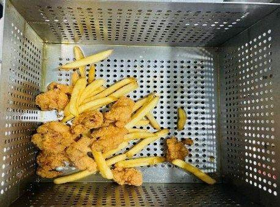
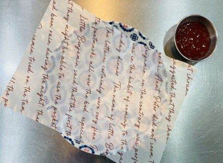
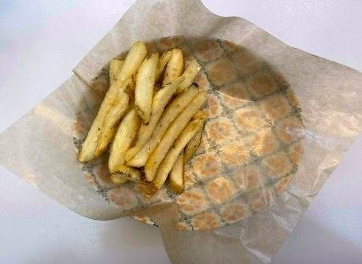
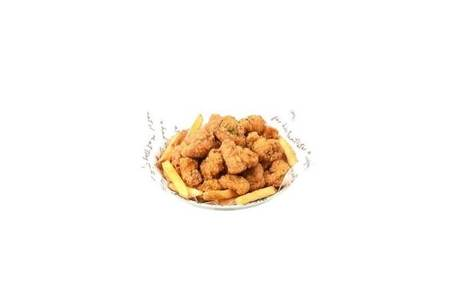

| 메뉴명 | 바삭 후라이드 치킨 |
|---|---|
| 판매가격 | 8,900원 |
| 원재료 | 아이센스순살치킨, 감자튀김, 파슬리, 양념치킨소스 |
| 사용 부자재 | 덮밥접시, 소스볼 |
| 메뉴특징 | 바삭한 겉면과 촉촉한 속살의 완벽한 조화! 모든 연령대가 사랑하는 벌툰의 후라이드 치킨 |
조리방법

1
180도 튀김기에 포션한 순살치킨 1봉(250g)을 넣고 1분간 먼저 튀긴다.
180도 튀김기에 포션한 순살치킨 1봉(250g)을 넣고 1분간 먼저 튀긴다.

2
포션한 감자튀김 2봉(160g)을 튀김기에 넣어 4분간 함께 튀겨낸다.
포션한 감자튀김 2봉(160g)을 튀김기에 넣어 4분간 함께 튀겨낸다.

3
접시에 유산지를 깔고, 종지에 양념치킨소스 30g을 담아 준비한다.
접시에 유산지를 깔고, 종지에 양념치킨소스 30g을 담아 준비한다.

4
한쪽에 기름 털어낸 감자튀김을 먼저 담아준다.
한쪽에 기름 털어낸 감자튀김을 먼저 담아준다.

5
남은 공간에 치킨을 담고 파슬리를 뿌려서 마무리한 뒤, 양념치킨소스와 함께 제공한다.
남은 공간에 치킨을 담고 파슬리를 뿌려서 마무리한 뒤, 양념치킨소스와 함께 제공한다.
※ 튀김시간
순살치킨 5분/ 감자튀김 4분